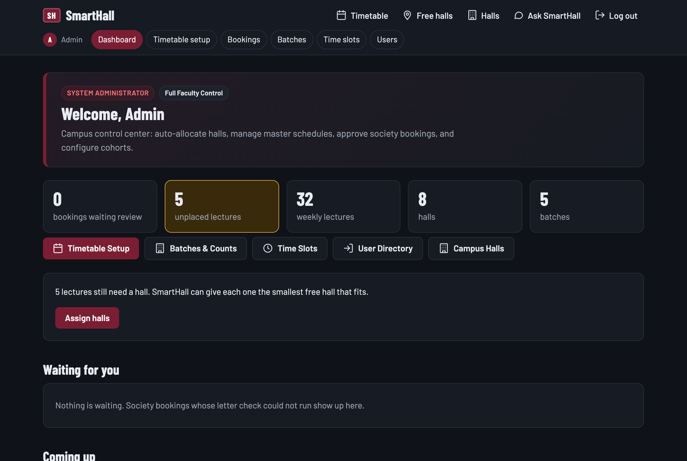
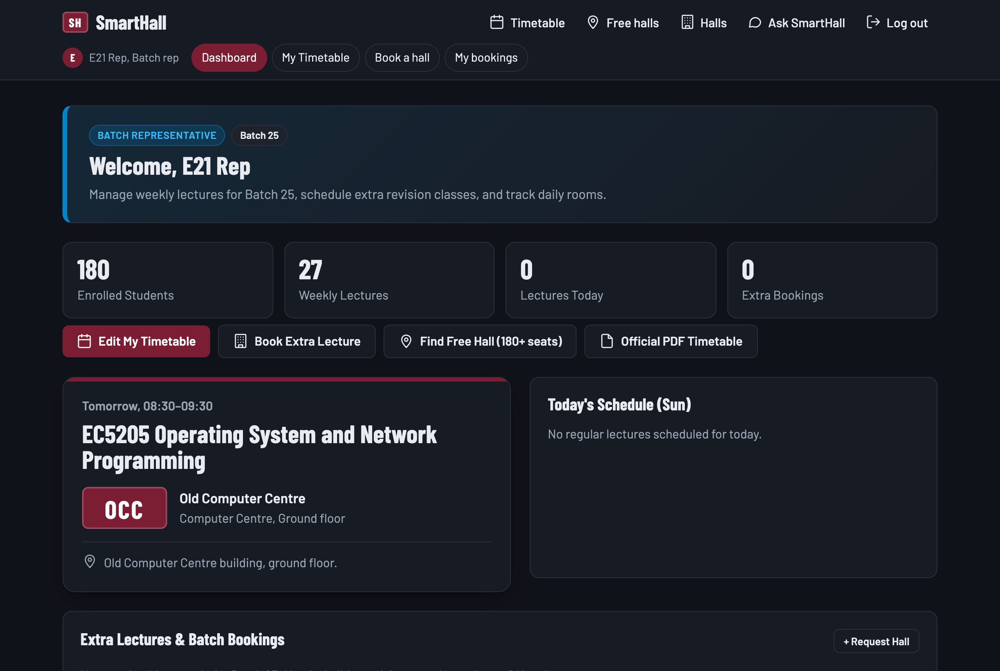
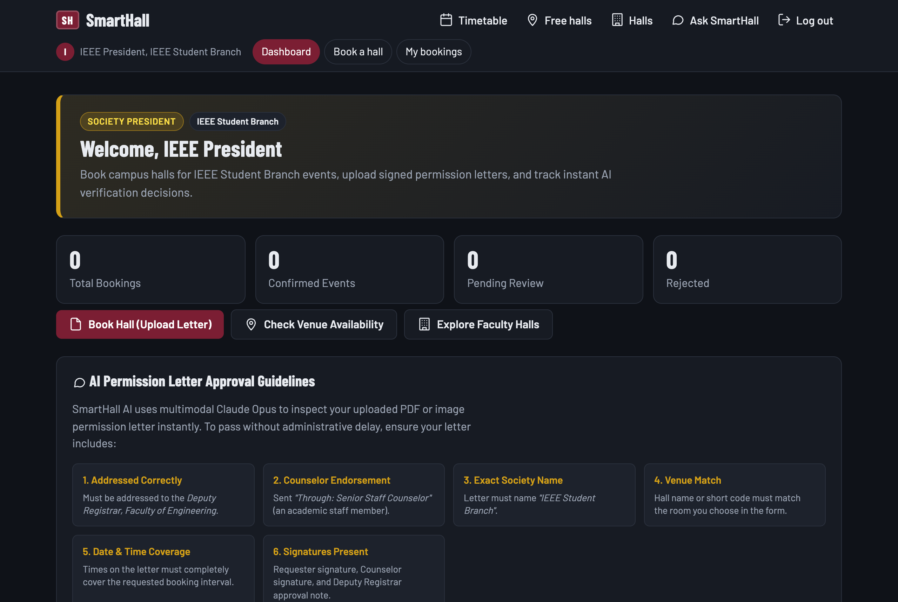

An Intelligent University Hall Allocation, Campus Navigation, and Multimodal AI Permission Letter Verification System
SmartHall AI is an enterprise-grade university hall allocation and campus navigation web platform built specifically to resolve the logistical friction of venue scheduling at the Faculty of Engineering, University of Ruhuna (UOR-EFAC). Prior to SmartHall AI, batch representatives, society presidents, and faculty administration relied on disparate WhatsApp chats, static spreadsheets, and physical paper permission letters to schedule lectures and student society events. This produced recurring double-bookings, capacity mismatches, and days of administrative delay.
SmartHall AI establishes a unified, centralized digital architecture providing:
Best-fit capacity placement solving bin-packing for lectures across all academic batches without hall clashes.
Claude Opus checks scanned permission letters against 6 administrative approval criteria with instant decisioning.
Python coordinate-based parsing that ingests official faculty timetable PDFs into live relational database records.
Deterministic regex query reader + Gemini Flash fallback providing real-time room availability and walking directions.
The Faculty of Engineering at Hapugala spans a large geographic footprint with diverse teaching venues:
| Venue Code | Venue Name | Building Location | Capacity |
|---|---|---|---|
| MLT | Main Lecture Theatre | Administration Building, Ground floor | 250 seats |
| LH1 | Lecture Hall 1 | Lecture Hall Complex, Ground floor | 180 seats |
| LH2 | Lecture Hall 2 | Lecture Hall Complex, 1st floor | 130 seats |
| ECC | Electrical Computer Centre | EIE Department, 2nd floor | 90 seats |
| NCC | New Computer Centre | Computer Centre building, Ground floor | 120 seats |
| OCC | Old Computer Centre | Computer Centre building, Ground floor | 80 seats |
| DO | Drawing Office | Civil Engineering Building, 1st floor | 70 seats |
| AUD | Faculty Auditorium | Faculty Auditorium, Main entrance | 400 seats |
SmartHall AI enforces strict Role-Based Access Control (RBAC) across four user classes: Admin, Batch Representative (Rep), Society President, and Students / General Public.
| Entity | Create (C) | Read (R) | Update (U) | Delete (D) |
|---|---|---|---|---|
| Lecture Halls | POST /hallsName, code, building, floor, capacity, photo upload, directions. |
GET /hallsGrid search, seat filters, photo cards, live free/busy badge. |
POST /halls/:idUpdate hall capacity, directions, or upload replacement photo. |
POST /halls/:id/deleteCascades bookings; unlinks timetable allocations. |
| Batches | POST /admin/batchesName (e.g. "25"), enrolled student headcount. |
GET /admin/batchesBatches list with student headcounts. |
POST /admin/batches/:idIn-place editing of name and headcount. |
POST /admin/batches/:id/deleteRemoves batch & cascades its lectures. |
| Time Slots | POST /admin/slotsStart time, end time, label validation ( end > start). |
GET /admin/slotsDaily teaching slots sequence. |
POST /admin/slots/:idAdjust period timings with constraint validation. |
POST /admin/slots/:id/deleteRemoves slot if no active lectures depend on it. |
| Timetable Lectures | POST /timetable or /uploadIndividual lecture or bulk CSV/PDF ingestion. |
GET / & /manageWeekly grid, next lecture card, filter by batch. |
POST /timetable/:idChange day, slot, subject, or assigned hall. |
POST /timetable/:id/deleteRemoves lecture with custom modal confirmation. |
| Official PDF Timetables | POST /timetable/uploadIngests faculty PDF & maps coordinate matrix. |
GET /timetables/:fileDirect browser PDF view / public download. |
POST /timetable/uploadReplaces previous PDF for the batch. |
POST /timetable/files/:id/deleteUnlinks and unlinks file from storage. |
| Hall Bookings | POST /bookingsRep booking or Society booking with PDF letter upload. |
GET /bookingsFilterable bookings list, status indicators, letter preview. |
POST /bookings/:id/statusAdmin approval, rejection, or revocation. |
POST /bookings/:id/deleteCancels reservation and frees venue immediately. |
| Users & Access | POST /admin/usersBcrypt-hashed registration with role and batch binding. |
GET /admin/usersUser directory with role indicators and batch assignments. |
POST /admin/users/:idRole elevation, batch reassignment, password reset. |
POST /admin/users/:id/deleteRemoves user without breaking booking audit logs. |
Rather than relying solely on application-layer logic, SmartHall AI delegates scheduling rules to MySQL 8.0 compound unique keys:
UNIQUE KEY one_class_per_batch (batch_id, day_of_week, time_slot_id): Mechanically impossible for a batch to have two scheduled classes simultaneously.UNIQUE KEY one_class_per_hall (hall_id, day_of_week, time_slot_id): Physically impossible for two lectures to share the same hall in the same teaching block.CHECK (end_at > start_at): Chronological sanity checks on all one-off events.SmartHall AI includes a dual-engine chatbot designed to assist students and reps who need immediate venue information from mobile devices without navigating complex tables.
User Input: "Free halls tomorrow at 10am for 120 students"
↓
[Stage 1: Regex Parser] → Extracted: { date: "2026-11-02", time: "10:00", count: 120 }
↓
[Stage 2: Live SQL Check] → SELECT halls WHERE capacity >= 120 AND NOT IN (lectures ∪ bookings)
↓
[Stage 3: Result Assembly] → "Free tomorrow at 10:00: Lecture Hall 1 (LH1, 180 seats) — LHC ground floor..."
In src/chatbot.js, user prompts are parsed locally using optimized regex:
today, tomorrow, ISO formats (2026-11-02), and natural expressions (25th Oct, November 2).10am, 2:30pm) and 24-hour military clock (14:30).120 students, 60 people, 180 seats, pax).
When a student submits conversational or non-standard queries (e.g., "Where is the Drawing Office?" or "Can you find a quiet spot for 40 students after lunch?"), the system triggers the Gemini Flash API (gemini-3.8-flash). Hall knowledge is injected via strict system prompt bounding, preventing hallucinated venue names or non-existent rooms.
Master timetable CSVs or PDFs often arrive without hall assignments. SmartHall AI's auto-allocation algorithm (src/allocate.js) treats hall allocation as a constrained combinatorial optimization problem:
function allocate(entries, halls, taken) {
// Sort entries: largest student cohorts placed first (hardest to fit)
const sorted = entries.slice().sort((a, b) => b.student_count - a.student_count);
const placed = [];
const clashes = [];
for (const entry of sorted) {
// Find smallest available hall that accommodates batch headcount
const fit = halls
.filter((h) => h.capacity >= entry.student_count)
.filter((h) => !taken.has(`${h.id}-${entry.day_of_week}-${entry.time_slot_id}`))
.sort((a, b) => a.capacity - b.capacity)[0]; // Smallest adequate hall
if (fit) {
placed.push({ id: entry.id, hall_id: fit.id });
taken.add(`${fit.id}-${entry.day_of_week}-${entry.time_slot_id}`);
} else {
clashes.push(entry);
}
}
return { placed, clashes };
}
The system includes an integrated Python parser (src/parsePdf.py) using pypdf:
08:30–09:30 to 16:30–17:30).EC5205) into full official titles ("Operating System and Network Programming").LT1 → LH1, CC → OCC).
A defining characteristic of SmartHall AI is its purposeful high-contrast dark theme (deep charcoal background #0f1117, elevated slate surface #181b24, university maroon #7b1e33, gold highlight #f2b705, and crisp emerald #22c55e).
Lecture halls at UOR-EFAC are frequently darkened during projector slide presentations. A blazing white screen produces glare and pupil fatigue. The dark theme minimizes ocular strain during 2-hour lectures.
Galle campus outdoor corridors are brightly sunlit. By utilizing high-saturation accent colors (gold, busy-red, free-green) against deep slate, venue availability remains immediately legible under harsh sunlight.
Over 80% of undergraduates browse schedules on mobile devices. True black and dark slate palettes substantially reduce power draw on modern OLED screens over a full 8-hour university day.
Venue badges (e.g. LH1, MLT, AUD) mimic tactile doorplates mounted on physical lecture room doors, creating an intuitive cognitive bridge between screen and physical space.
To eliminate operational friction and cognitive overload, SmartHall AI replaces generic monolithic dashboards with specialized, role-tailored workspaces for each authenticated persona: System Administrator, Batch Representative (Rep), and Society President.
POST /login → Session Cookie Established → Inspect req.session.user.role
• 'admin' → Redirects to /admin (Faculty Control Center)
• 'rep' → Redirects to /rep (Cohort Lecture Schedule & Matching Halls)
• 'president' → Redirects to /president (Society Venue Hub & Letter Decisioning)
/admin)
Central command for the Faculty Timetable Committee, Assistant Registrar, and Dean's Office (admin@smarthall.test).

/admin)
Real-time stat tiles, pending approvals, and quick actions toolbar
/rep)
Dedicated dashboard for elected batch reps (e.g. rep.e21@smarthall.test for Batch 25 / E21).

/rep)
Cohort strength, today's schedule, live next-lecture indicator, and fitting halls
/president)
Event booking and compliance management for student organizations (e.g. ieee@smarthall.test for IEEE Student Branch).

/president)
Reservation pipeline metrics, AI permission letter rules, and large event spaces
Rather than relying on browser-native window.confirm() popups (which are unstyled and interrupt the main JavaScript thread), SmartHall AI implements an HTML5 <dialog> modal:
backdrop-filter: blur(8px).Esc key dismissal, and backdrop click-to-close.
SmartHall AI includes a comprehensive Node.js native test suite (node --test) in test/logic.test.js:
| Test Case Description | Target Component | Result |
|---|---|---|
| Campus board displays active event & upcoming lecture per hall | src/board.js (hallBoard) |
PASS (0.32ms) |
| Next lecture correctly classifies "on now", "later today", "tomorrow" | src/board.js (nextLecture) |
PASS (0.49ms) |
| Chatbot natural language reader extracts date, time, and student count | src/chatbot.js (parseQuestion) |
PASS (1.05ms) |
| Allocation selects smallest fitting hall and isolates unplaced clashes | src/allocate.js (allocate) |
PASS (0.14ms) |
| Fixed lectures clash only on identical weekday and time slot | src/clash.js (fixedClashes) |
PASS (0.09ms) |
Test Suite Summary: 5 suites, 5 passing, 0 failing, 0 canceled. Execution duration: ~71ms.